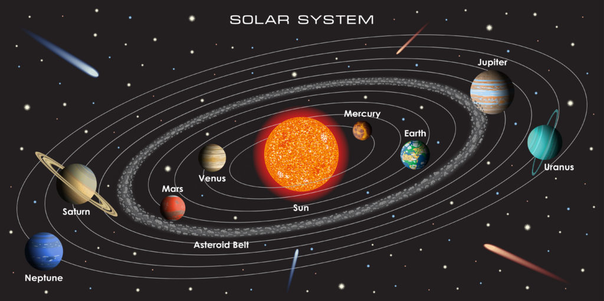

Space is the final frontier, a vast expanse that stretches beyond our imagination. It has captivated human curiosity for centuries, sparking dreams of exploring distant worlds and uncovering the mysteries of the cosmos. Our journey into space began with the invention of the telescope, which allowed us to peer into the universe and glimpse the wonders beyond our planet. Today, space exploration is driven by advanced technology, from powerful telescopes that observe far-off galaxies to spacecraft that travel to the outer reaches of our solar system. Every mission, whether it’s sending rovers to Mars or launching satellites into orbit, brings us closer to understanding the universe. The exploration of space not only expands our knowledge but also inspires future generations to continue pushing the boundaries of what is possible.

The Solar System and Beyond
Our solar system is a complex and dynamic place, with the Sun at its center and a diverse array of celestial bodies orbiting around it. It includes eight planets, each with unique characteristics, from the rocky surfaces of Mars and Earth to the gas giants Jupiter and Saturn. Beyond the planets, there are dwarf planets, asteroids, and comets, each contributing to the rich tapestry of our cosmic neighborhood. The study of these objects helps scientists understand the formation and evolution of our solar system. However, our curiosity extends beyond these boundaries, reaching into the depths of interstellar space. Discoveries of exoplanets in distant star systems fuel our quest to find other worlds that might harbor life.